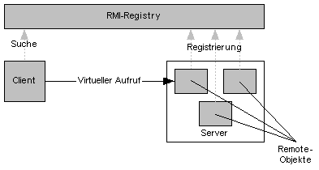
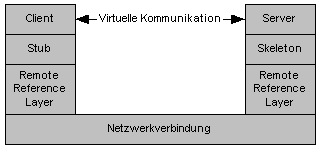

49.1 Einleitung
49.1.1 Prinzipielle Arbeitsweise
Im vorigen Kapitel wurde die Netzwerkprogrammierung mit Hilfe von
Sockets und URL-Objekten erläutert. Dabei wurden im Wesentlichen
Dienste verwendet, deren Aufgabe es war, Daten zwischen zwei
Netzwerkknoten zu übertragen. Höhere Anwendungen, wie etwa
das Kopieren von Dateien, die Manipulation von Verzeichnissen oder
das Starten von Programmen auf dem Server, wurden mit zusätzlichen
Anwendungsprotokollen wie FTP oder HTTP realisiert.
Neben der reinen Übertragung von Daten besteht eine weitere wichtige
Anwendung von Netzwerkstrukturen darin, Programmcode zu verteilen
und von unterschiedlichen Arbeitsplätzen im Netz aufzurufen.
Auf diese Weise können spezielle Aufgaben einer Applikation (wie
etwa der Datenbankzugriff oder die Kommunikation mit externen Systemen)
an geeignete Server delegiert und so die Applikationslast gleichmäßiger
verteilt und die Skalierbarkeit des Systems erhöht werden.
Mit RMI (Remote Method Invocation) stellt das JDK seit der
Version 1.1 einen Mechanismus zur Verfügung, der es ermöglicht,
Objekte auf einfache Weise im Netz zu verteilen und ihre Dienste anderen
Arbeitsplätzen zur Verfügung zu stellen. Die prinzipielle
Arbeitsweise von RMI lässt sich wie folgt skizzieren (siehe Abbildung 49.1):
- In einem Remote-Interface werden
eine oder mehrere Methoden definiert, die als aufrufbare Dienste anderen
Arbeitsplätzen zur Verfügung gestellt werden sollen.
- Eine Serverklasse implementiert das Interface und erzeugt eine
oder mehrere Instanzen, die als Remote-Objekte
bezeichnet werden.
- Die Remote-Objekte werden bei einem Namens-Service
registriert, der von potenziellen Clients abgefragt werden kann. Mit
der RMI-Registry ist ein einfacher
Namens-Service bereits Bestandteil des RMI-Pakets.
- Clients beschaffen mit Hilfe der RMI-Registry Referenzen auf die
benötigten Objekte und rufen die gewünschten Methoden auf.
Die beim Aufruf übergebenen Parameter werden an das Remote-Objekt
übertragen und die passende Methode wird dort ausgeführt.
Der Rückgabewert wird an den Client zurückübertragen.
Die Referenzen auf die Remote-Objekte werden als Remote-Referenzen
bezeichnet.

Abbildung 49.1: Prinzipielle Arbeitsweise von RMI
RMI etabliert also eine Client-Server-Architektur zwischen lokalen
Java-Objekten und den von ihnen aufgerufenen Remote-Objekten. Die
eigentliche Kommunikation zwischen den Teilnehmern ist fast vollständig
unsichtbar.
Die Rollen von Client und Server sind dabei keineswegs statisch festgelegt.
So kann ein Client durchaus Server-Funktionalitäten implementieren
oder ein Server kann zur Ausführung eines Client-Calls die Hilfe
eines anderen Remote-Objekts in Anspruch nehmen. Eine interessante
Eigenschaft von RMI besteht auch darin, fehlenden Code dynamisch nachzuladen.
Benötigt beispielsweise ein Server zur Ausführung eines
Auftrags eine bis dato unbekannte Klasse vom Client (die natürlich
ein ihm zur Compile-Zeit bekanntes Interface implementiert), so kann
er diese dynamisch vom Client laden und - dank der Plattformunabhängigkeit
von Java - auf dem Server ausführen.
49.1.2 Einzelheiten der Kommunikation
Bei der Kommunikation mit RMI hat der Client den Eindruck, Methoden
von Objekten aufzurufen, die auf dem Server liegen. In Wirklichkeit
liegen die Dinge natürlich etwas komplizierter, denn der Client
hat von der RMI-Registry lediglich ein Stub-Objekt
erhalten und das Remote-Objekt hat den Server nicht wirklich verlassen.
Ein Stub ist eine Klasse, die - wie das implementierende Remote-Objekt
- das Remote-Interface implementiert und daher für den Client
als Platzhalter für den Zugriff auf das Remote-Objekt dient.
Der Stub kommuniziert über eine TCP-Verbindung mit dem als Skeleton
bezeichneten Gegenstück auf der Server-Seite. Das Skeleton kennt
das tatsächliche Applikationsobjekt, leitet die Anfragen des
Stubs an dieses weiter und gibt den Rückgabewert an ihn zurück.
Stub und Skeleton werden während der Entwicklung mit Hilfe eines
Tools generiert und verbergen die komplizierten Details der Kommunikation
zwischen Server und Client.

Abbildung 49.2: Stubs und Skeletons
Bei der Kommunikation zwischen Client und Server (wenn also der Client
eine Methode auf einem Remote-Objekt aufruft) sind drei Arten von
Datentypen zu unterscheiden:
- Werden beim Aufruf einer Methode primitive Datentypen übergeben
oder zurückgegeben (int,
char,
boolean
usw.), werden sie wie gewöhnlich per Wert übergeben (call
by value). In diesem Fall besteht also überhaupt kein Unterschied
zu lokalen Java-Programmen.
- Lokale Objekte können dagegen nur dann als Parameter
oder Rückgabewert verwendet werden, wenn sie serialisierbar sind.
Sie werden bei der Übertragung kopiert und somit ebenfalls per
Wert übergeben (siehe Kapitel 42).
Viele Klassen des JDK, wie etwa String,
Calendar,
die numerischen Wrapper-Klassen oder die Collection-Klassen sind bereits
serialisierbar und können direkt verwendet werden. Eigene Klassen
müssen das Interface Serializable
implementieren.
- Verweise auf Remote-Objekte, wie sie beispielsweise vom Namens-Service
zurückgegeben werden, haben dagegen Referenzcharakter und werden
wie gewöhnliche Objektreferenzen behandelt.